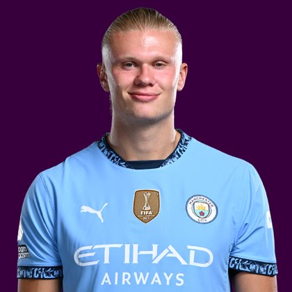
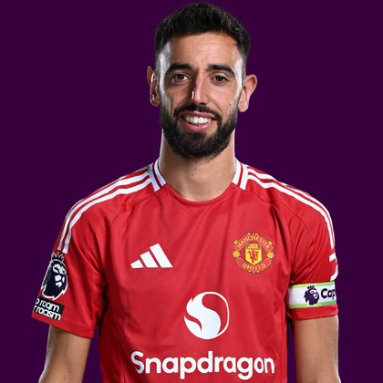
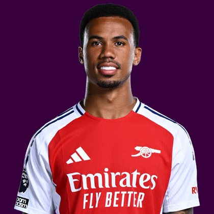
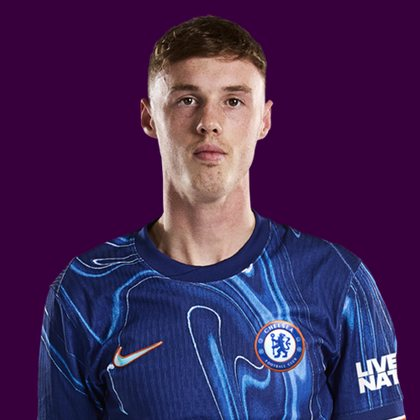
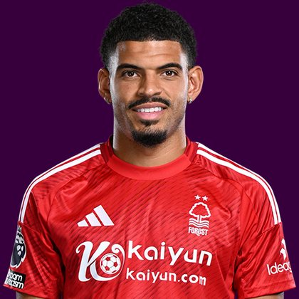
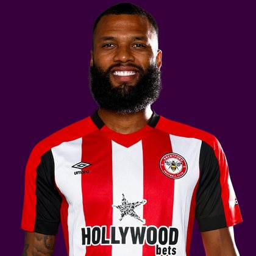
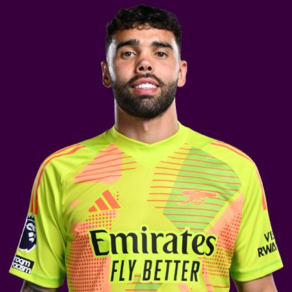

The Premier
Full tape
Top 10 · 25 lists · November 23, 2026
Full board- 1

12,000 - 2

10,873 - 3
 10,228
10,228 - 4

9,769 - 5
 9,409
9,409 - 6

9,111 - 7
 8,855
8,855 - 8
 8,629
8,629 - 9

8,426 - 10
 8,241
8,241
PITCHKEEP
Premier League ranks
Premier League ranks
Updated November 23, 2026
The Premier
Top 10 · 25 lists · November 23, 2026
Full board
12,000
10,873
9,769
9,111
8,426The Pitch
Top 10 · this scoring
Full board
9,769
8,855News
How will Premier League managers handle barrage of questions about Manchester City charges?
From bad to worse for David Raya owners 😣 The Arsenal goalkeeper has been withdrawn with an injury. X
Liverpool 4-0 Manchester United
Enzo Maresca outlines Man City silverware ambitions in first press conference as manager Yahoo Sports
Man Utd transfer news: Fulham defender Calvin Bassey is in talks over new contract amid Man Utd links - Paper Talk Sky Sports
Man Utd could miss out on Branthwaite transfer with Prem rivals ready to swoop The Sun
Andoni Iraola explains why Cody Gakpo and Ryan Gravenberch are missing for Liverpool vs Manchester United Read Liverpool
Martin Odegaard injury: Norway boss offers update on Arsenal star ahead of Brentford Premier League clash Goal.com
RAYA INJURED ⚠️ 🇪🇸 MY FPL GW12 TRANSFER PLANS 📝 | Fantasy Premier League 2026/27 YouTube
Mikel Arteta worried about Martin Odegaard after latest injury setback The Independent